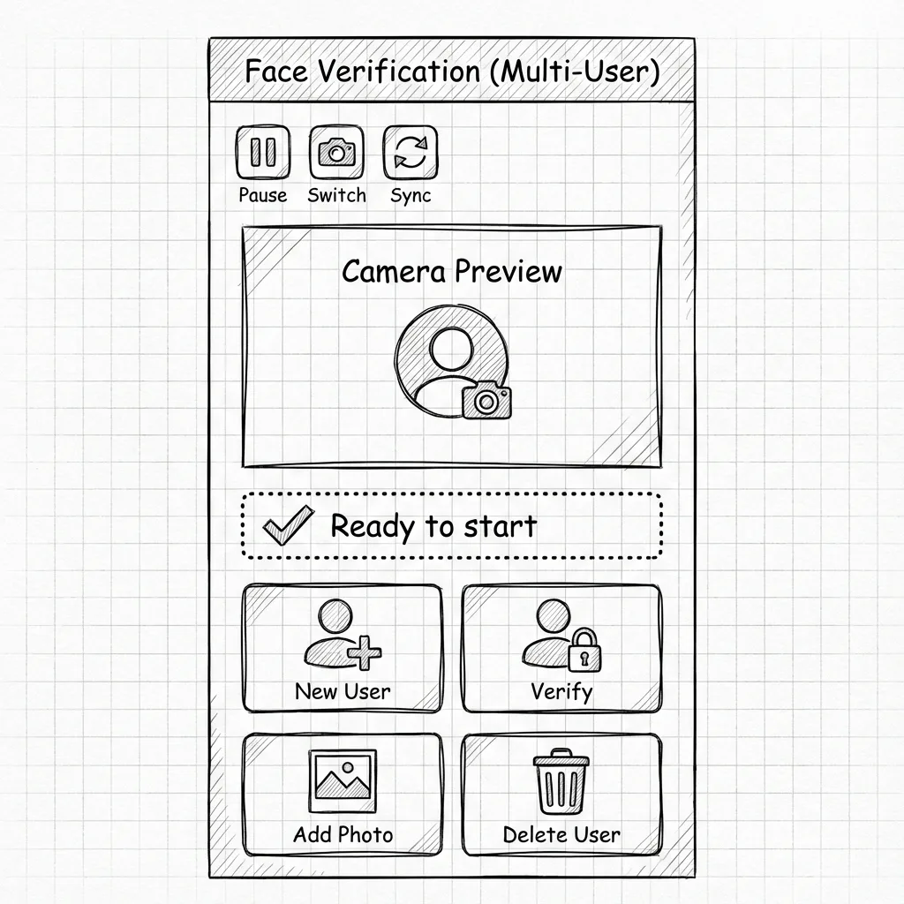

Artigo
Implementação de um Sistema de Reconhecimento Facial Multiusuário em Flutter
Autor: Pedro Conrad Junior
Data: Nov. 2025
Este artigo detalha a arquitetura e implementação de um sistema de reconhecimento facial multiusuário desenvolvido em Flutter. O projeto oferece a implementação de uma solução para autenticação biométrica local, operando offline e preservando a privacidade dos dados. Neste caso, é possível utilizar o mesmo dispositivo para autenticação de múltiplos usuários, com as biometrias armazenadas localmente.
Também é possível enviar as biometrias para um backend, facilitando a integração corporativa, nos casos em que se aplicar. Esta implementação consiste em enviar as embeddings para um backend, que pode ser um servidor local ou remoto.
Interface do Usuário
A interface foi projetada para ser simples e direta, permitindo o controle total da câmera e das ações de gerenciamento de usuários.

1. Visão Geral e Arquitetura
A aplicação segue o padrão MVC (Model-View-Controller) simplificado:
- View (
FaceDetect): Exibe o preview da câmera e feedback visual. - Controller (
FaceDetectController): Centraliza a regra de negócios e interação com APIs. - Model: Bibliotecas de reconhecimento facial e armazenamento (uso indireto).
2. Gerenciamento de Estado e Câmera
O controle reside na classe FaceDetectController. A inicialização prepara o motor de
reconhecimento e a câmera. Neste exemplo, o gerenciamento de estado da aplicação é feito utilizando
ChangeNotifier.
// lib/app/face_detect_controller.dart
Future<void> initialize() async {
// Inicializa o motor de reconhecimento facial
await FaceVerification.instance.init();
// Busca câmeras disponíveis
cameras = await availableCameras();
if (cameras.isEmpty) {
setStatus(FaceStatus.error, message: "No cameras found");
return;
}
// Configura o controlador da câmera
_cameraController = CameraController(
cameras[currentCamera],
ResolutionPreset.medium,
enableAudio: false,
);
await _cameraController!.initialize();
notifyListeners();
}Posteriormente é possível trocar de câmera ou pausar o mecanismo da câmera quando julgar necessário. Veja:
// lib/app/face_detect_controller.dart
Future<void> switchCamera() async {
currentCamera = (currentCamera + 1) % cameras.length;
await _cameraController!.dispose();
await initialize();
}
Future<void> pauseCamera() async {
await _cameraController!.dispose();
}3. O Fluxo de Reconhecimento Facial
A seguir está descrito o fluxo de reconhecimento facial, que é composto por três etapas principais:
Registro de Usuário
O registro de um usuário envolve a captura de uma imagem da face do usuário, a extração de um
embedding e o salvamento de forma segura. Este processo é feito pelo método
registerFace.
Para capturar as imagens, o app utiliza a classe CameraController do pacote
camera, que fornece uma interface para controlar a câmera do dispositivo.
Posteriormente, o app utiliza a classe FaceVerification do pacote
face_verification, que fornece uma interface para registrar a face do usuário passando
a imagem capturada e registrando-a no motor de reconhecimento facial com o método
registerFromImagePath.
// lib/app/face_detect_controller.dart
Future<void> registerFace(String userId) async {
try {
setStatus(FaceStatus.processing, message: "Capturing...");
final picture = await _cameraController!.takePicture();
final imagePath = await _saveTempImage(picture);
// Registra a face usando a biblioteca especializada
await FaceVerification.instance.registerFromImagePath(
id: userId,
imagePath: imagePath,
imageId: imageId,
);
// Recupera e persiste o embedding
final faces = await FaceVerification.instance.getFacesForUser(userId);
if (faces.isNotEmpty) {
await storage.write(
key: "embedding-$userId-$imageId",
value: jsonEncode({ ... }),
);
}
// ...
} catch (e) {
setStatus(FaceStatus.error, message: "Error: $e");
}
}Autenticação
A autenticação consiste na comparação de uma foto tirada no momento atual com os embeddings
salvos.
O processo é feito pelo método authenticateScan, que compara os dados biométricos
usando um limiar de similaridade previamente definido e customizável.
// lib/app/face_detect_controller.dart
Future<String?> authenticateScan() async {
try {
// ... captura imagem ...
// Verifica a imagem contra os perfis registrados
final matchId = await FaceVerification.instance.verifyFromImagePath(
imagePath: imagePath,
threshold: 0.65, // Limiar de aceitação <-- pode ser ajustado
);
return matchId; // Retorna o ID do usuário ou null, caso não encontre
} catch (e) {
return null;
}
}Revalidação Biométrica
O app também permite que um usuário adicione novas fotos. Para manter a segurança, o processo exige
que o usuário se autentique primeiro, garantindo que seja o mesmo usuário que está adicionando a
nova foto. Este processo é feito pelo método authenticateThenRegister.
// lib/app/face_detect_controller.dart
Future<void> authenticateThenRegister(String userId) async {
// Primeiro, verifica se é realmente o usuário
final match = await authenticateScan();
if (match == userId) {
setStatus(FaceStatus.done, message: "Authenticated! Adding new photo...");
// Se confirmado, permite o novo registro
await registerFace(userId);
} else {
setStatus(FaceStatus.error, message: "Authentication failed.");
}
}4. Segurança de Dados
Utilizamos o flutter_secure_storage para garantir que os dados biométricos (embeddings)
sejam armazenados em áreas criptografadas do sistema operacional (Keystore/Keychain). Veja um
exemplo, usando o flutter_secure_storage, carregado na variável storage:
// lib/app/face_detect_controller.dart
Future<void> saveEmbedding(String userId, String imageId, String embedding) async {
final storage = const FlutterSecureStorage();
await storage.write(
key: "embedding-$userId-$imageId",
value: embedding,
);
}5. Sincronização (Opcional)
O sistema permite enviar os embeddings para um backend, facilitando a integração corporativa. Neste exemplo, o backend é um servidor HTTP fictício que envia todas as embeddings de uma vez.
Future<void> uploadEmbeddings() async {
final all = await storage.readAll();
// ... filtra e prepara dados ...
final response = await http.post(
url,
body: jsonEncode({"embeddings": embeddings}),
);
}Conclusão
Esta implementação demonstra como criar um sistema de biometria seguro e eficiente em Flutter, combinando processamento local com uma arquitetura limpa e escalável. Ainda que o processo seja simples, ele pode ser facilmente adaptado e aperfeiçoado para atender às necessidades de uma aplicação corporativa.